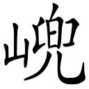

这转妙。
这转妙。 此非余波剩阜也，正是千里来龙之穴，七级浮屠之尖，非此不能完结。这揭谛得令，飞云一驾向东来。一昼夜赶上八大金刚，附耳低言道：“如此如此，谨遵菩萨法旨，不得违误。”八金刚闻得此言，刷的把风按下，将他四众，连马与经，坠落下地。噫！正是那——金丹秘诀，到此尽露。
此非余波剩阜也，正是千里来龙之穴，七级浮屠之尖，非此不能完结。这揭谛得令，飞云一驾向东来。一昼夜赶上八大金刚，附耳低言道：“如此如此，谨遵菩萨法旨，不得违误。”八金刚闻得此言，刷的把风按下，将他四众，连马与经，坠落下地。噫！正是那——金丹秘诀，到此尽露。李本总批：此一回转折，更出人意表！天地不全，经卷亦破，乃大彻大悟之语。何物猴狲，容易说出！可惜，可惜，如此说破，复有贪图完满算计十全者，真可笑也。
澹漪子曰：八十一难中，少一难、不得完一九九之数，犹之夫五千四十八日中，少八日不合一藏之数也。天地间事事缺陷不全，而独于灾难晷刻之数，毫发不肯假借如此。甚矣，学道之难也！或曰：金刚之欲完一难，何以必于通天河？盖适当五万四千之半途也。通天河何以遇老鼋？还元之义也。还元而何以堕水？水者，天一所生，地六所成，为天地最初之数。三藏出世抛江，回东堕水，盖八十一难，与贼相终始，亦与水相终给也。不堕水，安能完难？不完难，安能还元？不还元，安能正果！
八十难中，有以一难为难者，有以一难为二难者，有以一难为三四难者。分之则为八十，合之则四十八耳。然以八十计之，则九九之数缺一；以四十八计之，则七七之数亦缺一。九与七俱阳数，名异而实同也，又安得不补足一难也？
西方三藏之经，其得取归东土者，仅居三之一，于数原属不全。然五千四十八卷，已满一藏之目，是自西视之为不全，而自东视之则犹然大全也。至晒经石上沾破经尾，而后乃成其为不全矣。同一藏数也，何晷刻必欲其完，而经卷必欲其缺耶？
话表八金刚既送唐僧回国不题。那三层门下，有五方揭谛、四值功曹、六丁六甲、护教伽蓝，走向观音菩萨前启道：“弟子等向蒙菩萨法旨，暗中保护圣僧，今日圣僧行满，菩萨缴了佛祖金旨，我等望菩萨准缴法旨。”菩萨亦甚喜道：“准缴，准缴。”又问道：“那唐僧四众，一路上心行何如？”诸神道：“委实心虔志诚，料不能逃菩萨洞察。但只是唐僧受过之苦，真不可言。他一路上历过的灾愆患难，弟子已谨记在此，这就是他灾难的簿子。”菩萨从头看了一遍。上写着：
金蝉遭贬第一难；出胎几杀第二难；
满月抛江第三难；寻亲报冤第四难；
出城逢虎第五难；落坑折从第六难；
双叉岭上第七难；两界山头第八难；
陡涧换马第九难；夜被火烧第十难；
失却袈裟十一难；收伏八戒十二难；
黄风怪阻十三难；请求灵吉十四难；
流沙难渡十五难；收得沙僧十六难；
四圣显化十七难；五庄观中十八难；
难活人参十九难；贬退心猿二十难；
黑松林失散二十一难；宝象国捎书二十二难；
金銮殿变虎二十三难；平顶山逢魔二十四难；
莲花洞高悬二十五难；乌鸡国救主二十六难；
被魔化身二十七难；号山逢怪二十八难；
风摄圣僧二十九难；心猿遭害三十难；
请圣降妖三十一难；黑河沉没三十二难；
搬运车迟三十三难；大赌输赢三十四难；
祛道兴僧三十五难；路逢大水三十六难；
身落天河三十七难；鱼篮现身三十八难；
金

山遇怪三十九难；普天神难伏四十难；问佛根源四十一难；吃水遭毒四十二难；
西梁国留婚四十三难；琵琶洞受苦四十四难；
再贬心猿四十五难；难辨猕猴四十六难；
路阻火焰山四十七难；求取芭蕉扇四十八难；
收缚魔王四十九难；赛城扫塔五十难；
取宝救僧五十一难；棘林吟咏五十二难；
小雷音遇难五十三难；诸天神遭困五十四难；
稀柿秽阻五十五难；拯救驼罗五十六难；
朱紫国行医五十七难；降妖取金圣五十八难；
七情迷没五十九难；多目遭伤六十难；
路阻狮驼六十一难；怪分三色六十二难；
城里遇灾六十三难；请佛收魔六十四难；
比丘救子六十五难；辨认真邪六十六难；
松林救怪六十七难；僧房卧病六十八难；
无底洞遭困六十九难；灭法国难行七十难；
隐雾山遇魔七十一难；凤仙郡求雨七十二难；
失落兵器七十三难；会庆钉钯七十四难；
竹节山遭难七十五难；玄英洞受苦七十六难；
赶捉犀牛七十七难；天竺招婚七十八难；
铜台府监禁七十九难；凌云渡脱胎八十难。
这正是：
揭谛伽蓝护法多，圣僧历历苦遭魔。
路过十万八千里，难簿分明记不讹。
菩萨将难簿目过了一遍，急传声道：“佛门中九九归真，圣僧受过八十难，还少一难，不得完成此数。”即令揭谛，“赶上金刚，还生一难者。”这转妙。此非余波剩阜也，正是千里来龙之穴，七级浮屠之尖，非此不能完结。这揭谛得令，飞云一驾向东来。一昼夜赶上八大金刚，附耳低言道：“如此如此，谨遵菩萨法旨，不得违误。”八金刚闻得此言，刷的把风按下，将他四众，连马与经，坠落下地。噫！正是那——金丹秘诀，到此尽露。
九九归真道行难，坚持笃志立玄关。
必须苦练邪魔退，定要修持正法还。
莫把经章当容易，圣僧难过许多般。
古来妙合参同契，毫发差殊不结丹。
三藏脚踏了凡地，自觉心惊。八戒呵呵大笑道：“好，好，好！这正是要快得迟。”沙僧道：“好，好，好！因是我们走快了些儿，教我们在此歇歇哩。”大圣道：“俗语云，十日滩头坐，一日行九滩。”三藏道：“你三个且休斗嘴，认认方向，看这是什么地方。”沙僧转头四望道：“是这里，是这里！师父，你听听水响。”行者道：“水响想是你的祖家了。”八戒道：“他祖家乃流沙河。”沙僧道：“不是，不是，此通天河也。”三藏道：“徒弟啊，仔细看在那岸。”行者纵身跳起，用手搭凉篷仔细看了，下来道：“师父，此是通天河西岸。”三藏道：“我记起来了，东岸边原有个陈家庄。那年到此，亏你救了他儿女，深感我们，要造船相送，幸白鼋伏渡。我记得西岸上，四无人烟，这番如何是好？”八戒道：“只说凡人会作弊，原来这佛面前的金刚也会作弊。他奉佛旨，教送我们东回，怎么到此半路上就丢下我们？如今岂不进退两难！怎生过去！”沙僧道：“二哥休报怨。我的师父已得了道，前在凌云渡已脱了凡胎，今番断不落水。教师兄同你我都作起摄法，把师父驾过去也。”行者频频的暗笑道：“驾不去，驾不去！”
你看他怎么就说个驾不去？若肯使出神通，说破飞升之奥妙，师徒们就一千个河也过去了；只因心里明白，知道唐僧九九之数未完，还该有一难，故羁留于此。师徒们口里纷纷的讲，足下徐徐的行，直至水边，忽听得有人叫道：“唐圣僧，唐圣僧！这里来，这里来！”四众皆惊。举头观看，四无人迹，又没舟船，却是一个大白赖头鼋在岸边探着头叫道：“老师父，我等了你这几年，却才回也？”行者笑道：“老鼋，向年累你，今岁又得相逢。”三藏与八戒、沙僧都欢喜不尽。行者道：“老鼋，你果有接待之心，可上岸来。”那鼋即纵身爬上河来。行者叫把马牵上他身，八戒还蹲在马尾之后，唐僧站在马颈左边，沙僧站在右边，行者一脚踏着老鼋的项，一脚踏着老鼋的头叫道：“老鼋，好生走稳着。”那老鼋蹬开四足，踏水面如行平地，将他师徒四众，连马五口，驮在身上，径回东岸而来。诚所谓——以为返本还元可，以为贞下起元亦可。
不二门中法奥玄，诸魔战退识人天。
本来面目今方见，一体原因始得全。
秉证三乘随出入，丹成九转任周旋。
挑包飞杖通休讲，幸喜还元遇老鼋。
老鼋驮着他们，翙波踏浪，行经多半日，将次天晚，好近东岸，忽然问曰：“老师父，我向年曾央到西方见我佛如来，与我问声归着之事，还有多少年寿，果曾问否？”原来那长老自到西天玉真观沐浴，凌云渡脱胎，步上灵山，专心拜佛及参诸佛菩萨圣僧等众，意念只在取经，他事一毫不理，所以不曾问得老鼋年寿，无言可答，却又不敢欺，打诳语，沉吟半晌，不曾答应。老鼋即知不曾替问，他就将身一幌，唿喇的淬下水去，失信的看样。把他四众连马并经，通皆落水。咦！还喜得唐僧脱了胎，成了道，若似前番，已经沉底。又幸白马是龙，八戒、沙僧会水，行者笑巍巍显大神通，把唐僧扶驾出水，登彼东岸。只是经包、衣服、鞍辔俱湿了。师徒方登岸整理，忽又一阵狂风，天色昏暗，雷闪俱作，走石飞沙。但见那——
一阵风，乾坤播荡；一声雷，振动山川。一个闪，钻云飞火；一天雾，大地遮漫。风气呼号，雷声激烈。闪掣红绡，雾迷星月。风鼓的尘沙扑面，雷惊的虎豹藏形。闪幌的飞禽叫噪，雾漫的树木无踪。那风搅得个通天河波浪翻腾，那雷振得个通天河鱼龙丧胆，那闪照得个通天河彻底光明，那雾盖得个通天河岸崖昏惨。好风，颓山烈石松篁倒。好雷，惊蛰伤人威势豪。好闪，流天照野金蛇走。好雾，混混漫空蔽九霄。
唬得那三藏按住了经包，沙僧压住了经担，八戒牵住了白马，行者却双手轮起铁棒，左右护持。原来那风雾雷闪乃是些阴魔作号，欲夺所取之经，劳攘了一夜，直到天明，却才止息。长老一身水衣，战兢兢的道：“悟空，这是怎的起？”行者气呼呼的道：“师父，你不知就里，我等保护你取获此经，乃是夺天地造化之功，可以与乾坤并久，日月同明。寿享长春，法身不朽，此所以为天地不容，鬼神所忌，欲来暗夺之耳。一则这经是水湿透了，二则是你的正法身压住，雷不能轰，电不能照，雾不能迷，又是老孙轮着铁棒，使纯阳之性，护持住了，及至天明，阳气又盛，所以不能夺去。”
三藏、八戒、沙僧方才省悟，各谢不尽。少顷，太阳高照，却移经于高崖上，开包晒晾，至今彼处晒经之石尚存。他们又将衣鞋都晒在崖旁，立的立，坐的坐，跳的跳。真个是——
一体纯阳喜向阳，阴魔不敢逞强梁。
此所谓消尽阴魔，鬼莫侵也。向来安得有此！
须知水胜真经伏，不怕风雷闪雾光。
自此清平归正觉，从今安泰到仙乡。
晒经石上留踪迹，千古无魔到此方。
他四众检看经本，一一晒晾，早见几个打鱼人，来过河边，抬头看见，内有认得的道：“老师父可是前年过此河往西天取经的？”八戒道：“正是，正是，你是那里人？怎么认得我们？”渔人道：“我们是陈家庄上人。”八戒道：“陈家庄离此有多远？”渔人道：“过此冲南有二十里，就是也。”八戒道：“师父，我们把经搬到陈家庄上晒去。他那里有住坐，又有得吃，就教他家与我们浆浆衣服，却不是好？”三藏道：“不去罢，在此晒干了，就收拾找路回也。”那几个渔人行过南冲，恰遇着陈澄，叫道：“二老官，前年在你家替祭儿子的师父回来了。”陈澄道：“你在那里看见？”渔人回指道：“都在那石上晒经哩。”陈澄随带了几个佃户，走过冲来望见，跑近前跪下道：“老爷取经回来，功成行满，怎么不到舍下，却在这里盘弄？快请，快请到舍。”行者道：“等晒干了经，和你去。”陈澄又问道：“老爷的经典、衣物，如何湿了？”三藏道：“昔年亏白鼋驮渡河西，今年又蒙他驮渡河东。已将近岸，被他问昔年托问佛祖寿年之事，我本未曾问得，他遂淬在水内，故此湿了。”又将前后事细说了一遍。那陈澄拜请甚恳，三藏无已，遂收拾经卷。不期石上把佛本行经沾住了几卷，遂将经尾沾破了，所以至今本行经不全，晒经石上犹有字迹。三藏懊悔道：“是我们怠慢了，不曾看顾得！”行者笑道：“不在此！不在此！盖天地不全，这经原是全全的，今沾破了，乃是应不全之奥妙也，岂人力所能与耶！”乾坤缺陷，正是乾坤大出，被此公一语道破。师徒们果收拾毕，同陈澄赴庄。
那庄上人家，一个传十，十个传百，百个传千，若老若幼，都来接看。陈清闻说，就摆香案在门前迎迓，又命鼓乐吹打。少顷到了迎入，陈清领合家人眷俱出来拜见，拜谢昔日救女儿之恩，随命看茶摆斋。三藏自受了佛祖的仙品仙肴，又脱了凡胎成佛，全不思凡间之食。二老苦劝，没奈何，略见他意。孙大圣自来不吃烟火食，也道：“彀了。”沙僧也不甚吃，八戒也不似前番，就放下碗。行者道：“呆子也不吃了？”八戒道：“不知怎么，脾胃一时就弱了。”遂此收了斋筵，却又问取经之事。三藏又将先至玉真观沐浴，凌云渡脱胎，及至雷音寺参如来，蒙珍楼赐宴，宝阁传经，始被二尊者索人事未遂，故传无字之经，后复拜告如来，始得授一藏之数，并白鼋淬水，阴魔暗夺之事，细细陈了一遍，就欲拜别。那二老举家，如何肯放，且道：“向蒙救拔儿女，深恩莫报，已创建一座院宇，名曰救生寺，专侍奉香火不绝。”又唤出原替祭之儿女陈关保、一秤金叩谢，此时当有十四五岁矣。复请至寺观看。三藏却又将经包儿收在他家堂前，与他念了一卷《宝常经》。后至寺中，只见陈家又设馔在此。还不曾坐下，又一起来请；还不曾举箸，又一起来请，络绎不绝，争不上手。三藏俱不敢辞，略略见意。只见那座寺果盖得齐整——
山门红粉腻，多赖施主功。一座楼台从此立，两廊房宇自今兴。朱红隔扇，七宝玲珑。香气飘云汉，清光满太空。几株嫩柏还浇水，数干乔松未结丛。活水迎前，通天迭迭翻波浪；高崖倚后，山脉重重接地龙。
三藏看毕，才上高楼，楼上果装塑着他四众之象。八戒看见，扯着行者道：“兄长的相儿甚象。”沙僧道：“二哥，你的又象得紧。只是师父的又忒俊了些儿。”三藏道：“却好，却好！”遂下楼来，下面前殿后廊，还有摆斋的候请。行者却问：“向日大王庙儿如何了？”众老道：“那庙当年拆了。老爷，这寺自建立之后，年年成熟，岁岁丰登，却是老爷之福庇。”行者笑道：“此天赐耳，与我们何与！但只我们自今去后，保你这一庄上人家，子孙繁衍，六畜安生，年年风调雨顺，岁岁雨顺风调。”众等却叩头拜谢。只见那前前后后，更有献果献斋的，无限人家。八戒笑道：“我的蹭蹬！那时节吃得，却没人家连请十请；今日吃不得，却一家不了，又是一家。”饶他气满，略动手又吃过八九盘素食；纵然胃伤，又吃了二三十个馒头，已皆尽饱又有人来相邀。三藏道：“弟子何能，感蒙至爱！望今夕暂停，明早再领。”
时已深夜，三藏守定真经，不敢暂离，就于楼下打坐看守。将及三更，三藏悄悄的叫道：“悟空，这里人家，识得我们道成事完了。自古道：真人不露相，露相不真人。好话。恐为久淹，失了大事。”行者道：“师父说得有理，我们趁此深夜，人皆熟睡，寂寂的去了罢。”八戒却也知觉，沙僧尽自分明，白马也能会意。遂此起了身，轻轻的抬上驮垛，挑着担，从庑廊驮出。到于山门，只见门上有锁。行者又使个解锁法，开了二门、大门，找路望东而去。只听得半空中有八大金刚叫道：“逃走的，跟我来！”那长老闻得香风荡荡，起在空中。这正是：
丹成识得本来面，体健如如拜主人。
毕竟不知怎生见那唐王，且听下回分解。
悟元子曰：上回结出性命俱了，脱去幻身之假，露出法身之真，入于至诚无私地位，而大道完成矣。然功成虽在自造，而火候全赖师传，若不能始终通彻，纵金丹到手，未免得而复失，有“夜半忽风雷”之患。故此回叫学者急访明师，究明全始全终之下手归着，方可完成大化神圣之妙道也。
篇首“唐僧既被八大金刚送回国，菩萨将难筹看过，急传声道：‘佛门中“九九归真”，圣僧受过八十难，还少一难，不得完成此数。’即命揭谛赶上金刚，附耳低言：‘如此如此，谨遵菩萨法旨，不得违误。”’噫！唐僧脱壳成真，已到如来地步，岂真少一难，而故生一难以补其数乎？盖以金丹火候，至幽至深，至详至细，有内火候，有外火候，有采药火候，有修丹火候，有结胎火候，有脱胎火候，丝毫之差，千里之失，须要真师附耳低言，指示个明白，方能直前无阻，大道易成。“不得违误”，是叫人决定求师，而不得违误。此言师心自造，有失前程。此一难，乃八十一难收完结果之一难。过得此难，八十一难俱可了了；过不得此难，而八十难尽不能过得也。
诗云：“古来妙合参同契，毫发差时不结丹。”《参同契》为古来历圣口口相传，心心相授之妙道，若修行人所明之理与《参同》有丝毫不同，即是盲修瞎炼，外道旁门，未许结丹，而况不求师者乎？“唐僧被金刚坠在凡地，八戒呵呵大笑道；‘好！好！好！这正是要快得迟。’”言不得师传，而妄自造作，急欲向前，反成落后，未免为有知者，“呵呵大笑”。学者当先以此为戒，甚勿妄想腾空，坠在凡地也。
“三藏道：‘认认这是什么地方。’行者道：‘是这里！是这里！’八戒对沙憎道：‘想是你的祖家。’行者道；‘不是！不是！此通天河也。’”夫通天河乃还元返本之处，结胎在此，脱胎在此，正所谓五千四十八卷之真经，十万八千之中道，真阴真阳之本乡，神观大观之窍妙，须要于此处认识的亲切，审问个明白，无毫发之差，才能自东上西，自西回东，而功完行满，成真了道。否则，仅知前半火候，而不知后半火候，终被这里挡住，虽真经到手，而未许我有，其返本还元，犹未可定也。“三藏道：‘仔细看在那岸。’行者道：‘此是通天河西岸。’”此处不可不辨，前次过通天河，是苦修而求于他家；今此过通天河，是得经而归于我家。故前难在东岸，而不得到西岸；今难在两岸，而不得到东岸也。
“沙僧道：‘我师父已脱了凡胎，把师父驾过去。’行者微微笑道：‘驾不去！驾不去！’”盖金丹大道，有为无为，各有其时；结服脱胎。另有妙用。了得前半功夫，不难于脱凡胎；未了后半功夫，如何能脱圣脱。此中机秘，不得师指，枉自猜量。故仙翁于此处提明道：“你道他说怎么驾不去，若肯使出神通，说破飞升之奥妙，就一千个河也过得去了。只因心里明白，知道九九之数未完，还该有此一难，故稽留于此。”噫！可晓然矣。诸般色相尽脱，而于法身未脱，终非九还七返金液大还丹之旨。原其法身之不能脱者，皆因未遇明师说破飞升之奥妙耳。不知飞升奥妙，即此一难，便稽留于中途，而不得回家矣。
“忽听有人叫道：‘圣僧这里来！’四众看时，却还是那个大白赖头鼋。”言前之有为者，求此还元之道；后之无为者，了此还元之道。有为无为，总为此还元，这里去，还从这里来，未可舍这里而在别处了者，其所谓“玄之又玄，众妙之门”。“四众连马五口，上在白鼋身上，向东岸而来。”诗谓“不二门中法奥玄，诸魔战退识人天。本来面目今方见，一体原因始得全。果证三乘凭出入，丹成九转任周旋。挑包飞杖通休讲，幸喜还元遇老鼋。”此《河图》、《洛书》，体用如一，功完行满，五行悉化，浑然太极，无字之真经在是也。
何以老鼋因不曾问他的归着，呼啦的淬下水去，把四众连马并经，皆落水中乎？此等处，学者勿得错会，若以唐僧还该一难，差之多矣。殊不知上西天取经，乃有为了命之事，是知至至之，起脚之道也；得经回来乃无为了性之事，是知终终之，归着之道也。倘只知起脚，而不问归着，纵能返本还元，真经到手，若差之毫厘，失之千里，得而复失，“夜半风雷”之患，势所必有。归着之道为何道？即防危虑险，沐浴温养之功。其曰：“三藏按住了经包，沙僧压住了经担，八戒牵住了白马，行者却双手轮起铁棒，左右护持。”非防危虑险乎？能防危虑险，纵有些阴魔作耗，亦必渐消渐化，归于阴尽阳纯之地矣。
夫金丹之道，“乃是夺造化之功，可以与乾坤并久，日月同明，寿享长春，法身不朽，为鬼神所忌，必来暗夺之”。若不知防危虑险，沐浴温养，到阴尽阳纯之地，犹有后患。曰：“一则这经是水湿透了”者，淋浴也；“二则是你的正法身压住”者，温养也；“三则是老孙使纯阳之性护持住了”者，防危虑险也；“及至天明，阳气又盛，所以不能夺去”者，阴尽阳纯，无灾无难也。防危虑险，沐浴温养，即是归着，此外别无归者。“三藏、八戒、沙僧方才省悟”者，即省悟此归着也。知的起脚，又知的归着，知至至之，知终终之；有为之后即无为，了命之后即了性，有无兼修，性命惧了，内外光明；圆陀陀，光灼灼，净倮倮，赤洒洒，可以移经高崖，开宝晒晾；立的立，坐的坐，火候功力无用，归于大休歇之地矣。
诗云：“一体纯阳接太阳”者，内外光明也；“阴魔不敢逞强梁”者，阴气自化也；“须知水胜真经伏”者，沐浴温养也；“不怕风雷闪雾光”者，客气难入也；“自此清平归正觉”者，圣胎完成也；“从今安泰到他乡”者，待时脱化也；“晒经石上留遗迹”者，成己之后还成人，欲向人间留秘诀也；“千古无人到此方”者，世人认假不认真，未逢一个是知意也。噫！仙翁演道，演到此地，可谓拔天根而凿理窟，示人以起脚，而且示人以归着。欲其性命双修，冀必至于形神俱妙之地而后已。其如迷人不识者何哉？
其曰：“不期石上把《佛本行经》沾住了几卷，遂将经尾沾破了，所以至今《佛本行经》不全”者，盖以《西游》大道，借佛三藏真经以演道，其中药物火候，有为无为，修性修命，无一不备。所言错综离合，散乱不整，须要真师口诀印证，《本行经》不全者，须赖口诀以传之也。倘知起脚而不知归着，知归着而不知起脚，总是不能全经。前第九回咬下江流左脚小指，是起脚之口诀，必要师传；此回沾去经尾，是归着之口诀，亦要师传。仙翁以本行集经不全，在通天河示出，其提醒后人者，何其切欤！
通天河在十万八干之中，是五万四千里，取经日期足数要五千四十八日，仅得五千四十日，与五万四千里相全，少八日不足藏数，是日少而程亦少；回东须在八日之内，以完补五千四十八日之数，八日之内，生出通天河一难，是日足而程亦足。俱合五千四十八卷真经之数，则知此真经，即通天河之老鼋，老鼋即灵山会之真经。从本元处而有为行去以取经，从本元处而无为回来以全经，总以示其经在本元之处，惟在人始有为而还此元，返此本；又无为而保此元，全此本。能保全此本元，才算得昔日救活真阴真阳，而有始有终。故陈澄陈清谢当日救儿女之恩，立救生祠，唤出关保、秤金，当面叩谢也。
以上皆附耳低言“如此如此”之妙旨。修行者若不知此等妙旨，纵能脱得凡胎，而圣胎难脱，未足为还元返本之极处。若有得其真诀者，去西回东，来去无碍，还元返本，直有可必。修行人到得还元返本，天事人事俱已了毕，物我归空，身外有身，回视一切尘物，犹如毫毛，何足恋之？“真人不露相，露相不真人”，急须寂寂的去了，轻轻的走路，解去情缘之锁，跳出是非之门，“香风荡荡，起在空中”，正是此时。故结云：“丹成识的本来面，躯健如如拜主人。”学者可不在通天河举只眼乎？
诗曰：
通前达后理无差，性命双修是作家。
若遇真师传妙诀，功完行满赴龙华。
张含章《通易西游正旨分章注释》批语：
篇中难不可少，限不可遍，毫发差殊不作丹，是明火候；渡来渡去，是水乡铅一味，是明药物。